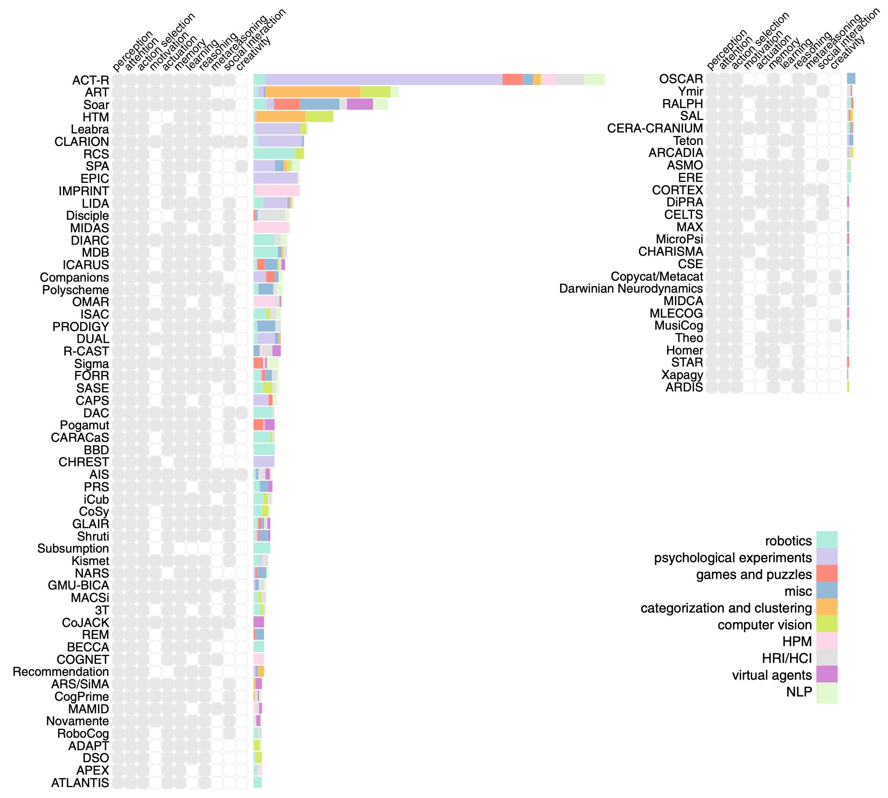

Cognitive Architectures 学习
对综述 40 years of cognitive architectures: core cognitive abilities and practical applications 的阅读学习笔记。
写在最前
由于先前并不太清楚认知架构到底是什么？用来做什么？所以此处先从从个人的机器学习背景出发做一个初步的理解。
首先，认知架构不是一个具体任务上的具体解决方案，而是一种范式，即具体任务上认知系统的设计思想、原则和方法。 它们类似于编程中的类，而基于架构创建的特定认知系统则类似于类的实例。
这些认知架构提供了一种理解和模拟人类认知过程的方法，包括感知、注意机制、行为选择、学习、记忆和推理等核心认知能力。 通过构建针对特定任务的认知系统，研究者可以模拟和理解这些核心认知能力是如何影响人类在实际应用中的表现的。 在特定任务中，这些核心认知能力可以通过不同的方法和技术来实现，例如机器学习、深度学习、强化学习等。
这些系统可以应用于各种实际应用和研究问题，例如人机交互、教育、健康等领域。
论文内容总览
Introduction
Cognitive architectures reviewed in this paper are mainly used as research tools and very few are developed outside of academia.
本文的目的：
- To present a broad, inclusive, judgment-neutral snapshot of the past 40 years of development of the field with an emphasis on the core capabilities of perception, attention mechanisms, action selection, learning, memory, reasoning, meta reasoning and their practical applications.
为了使本文易读，对调研边界作了如下限定：
- Consider only implemented architectures with at least one practical application and several peer-reviewed publications.
- Do not explicitly include some of the philosophical architectures
- Exclude large-scale brain modeling projects
- which are low-level and do not easily map onto the breadth of cognitive capabilities modeled by other types of cognitive architectures.
- many of the existing brain models do not yet have practical applications.
What are cognitive architectures?
目标
- Reason about problems across different domains, develop insights, adapt to new situations and reflect on themselves.
- Research in cognitive architectures is to model the human mind, eventually enabling us to build human-level artificial intelligence.
- Provide evidence what particular mechanisms succeed in producing intelligent behavior and thus contribute to cognitive science.
本文的记录逻辑
- What methods or strategies
- How they have been used
- What level of success has been achieved or lessons learned
- Important elements that help guide future research
认知架构现状
Although particular models already demonstrate cognitive abilities in limited domains, at this point they do not represent a unified model of intelligence.
Taxonomies of cognitive architectures
Three major paradigms are currently recognized:
- Symbolic (also referred to as cognitivist)
- Symbolic systems excel at planning and reasoning, they are less able to deal with the flexibility and robustness that are required for dealing with a changing environment and for perceptual processing.
- 符号主义，更倾向于严格的逻辑推理与规划。
- Emergent (connectionist)
- The resulting system also loses its transparency, since knowledge is no longer a set of symbolic entities and instead is distributed throughout the network.
- 连接主义，更倾向于模拟人类大脑的神经网络。
- Hybrid
认知架构主要模块
基本是原文关键信息节选。
Perception
Perception is a process that transforms raw input into the system’s internal representation for carrying out cognitive tasks. The five most common ones are vision, hearing, smell, touch and taste.
Vision
- The real vision systems only receive pixel-level input with no additional information (e.g. camera parameters, locations and features of objects, etc.).
- The simulated vision systems generally omit early and intermediate vision and receive input in the form that is suitable for the later stages of visual processing (e.g. symbolic descriptions for shape and color, object labels, coordinates, etc.).
Audition
Since the auditory modality is purely functional, many architectures resort to using available speech-to-text software rather than develop models of audition. Much less attention is paid to the emotional content (e.g. loudness, speech rate, and intonation)
Symbolic input
These include input in the form of text commands and data, and via a GUI.
Multi-modal perception
Human brain receives a constant stream of information from different senses and integrates it into a coherent world representation. For the most part, cognitive architectures ignore cross-modal interaction.
Attention
Attention mediates the selection of relevant and filters out irrelevant information from the incoming sensory data.
Elements of attention are grouped into three classes of information reduction mechanisms:
- selection (choose one from many)
- restriction (choose some from many)
- suppression (suppress some from many).
Overall, visual attention is largely overlooked in cognitive architectures research with the exception of the biologically plausible visual models (e.g. ART) and the architectures that specifically focus on vision research (ARCADIA, STAR).
Action selection
Action selection can be split into
- the “what” part involving the decision making
- the “how” part related to motor control
We distinguish between two major approaches to action selection: planning and dynamic action selection.
- Planning refers to the traditional AI algorithms for determining a sequence of steps to reach a certain goal or to solve a problem in advance of their execution.
- In dynamic action selection, one best action is chosen among the alternatives based on the knowledge available at the time.
Memory
Research on memory in the cognitive architectures mainly concerns its structure, representation and retrieval. Relatively little attention has been paid to the challenges associated with maintaining a large-scale memory store since both the domains and the time spans of the intelligent agents are typically limited.
Long-term storage
Long-term storage is further subdivided into semantic, procedural and episodic types, which store factual knowledge, information on what actions should be taken under certain conditions and episodes from the personal experience of the system respectively.
- procedural memory of implicit knowledge (e.g. motor skills and routine behaviors)
- declarative memory, which contains explicit knowledge.
- semantic (factual) memory
- episodic (autobiographical) memory.
Short-term storage
- sensory memory: cache the incoming sensory data and preprocess it before transferring it to other memory structures
- working memory: mechanism for temporary storage of information related to the current task.
Global Memory
Some architectures do not have separate representations for different kinds of knowledge or short- versus long-term memory, and instead, use a unified structure to store all information in the system
Learning
Learning is the capability of a system to improve its performance over time.
The type of learning and its realization depend on many factors, such as design paradigm (e.g. biological, psychological), application scenario, data structures and the algorithms used for implementing the architecture, etc.
- Perceptual learning: applies to the architectures that actively change the way sensory information is handled or how patterns are learned on-line.
- Declarative learning: declarative knowledge is a collection of facts about the world and various relationships defined between them.
- Procedural learning: refers to learning skills, which happens gradually through repetition until the skill becomes automatic.
- Associative learning: is a broad term for decision-making processes influenced by reward and punishment. Reinforcement learning (RL) and its variants are commonly used in computational models of associative learning.
- Non-associative learning: does not require associations to link stimuli and responses together. Habituation and sensitization are commonly identified as two types of non-associative learning.
- Habituation describes gradual reduction in the strength of response to repeated stimuli.
- Sensitization describes gradual increase in the strength of response to repeated stimuli.
- Because of their simplicity, these types of learning are considered a prerequisite for other forms of learning.
- Most of the work to date in this area has been dedicated to the habituation in the context of social robotics and human-computer interaction.
- Priming: occurs when prior exposure to stimulus affects its subsequent identification and classification.
Reasoning
All cognitive architectures are concerned with
- practical reasoning: to find the next best action and perform it
- theoretical reasoning: aims at establishing or evaluating beliefs.
One of the main challenges a human, and consequently any human-level intelligence, faces regularly is acting based on insufficient knowledge or “making rational decisions against a background of pervasive ignorance” So far, the most consolidated effort has been spent on overcoming the insufficient knowledge and/or resources problem in continuously changing environments.
The question of whether higher human cognition is inherently symbolic or not is still unresolved. The symbolic and hybrid architectures considered so far, view reasoning mainly as a symbolic manipulation.
Metacognition
Intuitively defined as “thinking about thinking”, is a set of abilities that introspectively monitor internal processes and reason about them. Metacognition is also necessary for social cognition, particularly for the skill known in the psychological literature as a Theory of Mind (ToM). ToM refers to being able to acknowledge and understand mental states of other people, use the judgment of their mental state to predict their behavior and inform one’s own decision-making.
实际应用方向
What cognitive abilities have been demonstrated by the cognitive architectures and what particular practical tasks have they been applied to?

上图是文章中对现有架构的应用进行的分类统计。 可以看到 ACT-R 这个架构的应用最多，其次是 ART 和 SOAR，或许之后可以对这三个架构进行更深入的了解。 这些统计图表也可以在此网站查阅。
Categories of applications:
- Psychological experiments
- Demonstrate that cognitive architectures can adequately model human data
- Give reasonable explanations for existing psychological or physiological phenomena.
- If the data produced by the simulation matches the human data in some or most aspects, it is taken as an indication that a given cognitive architecture can to some extent imitate human cognitive processes.
- Robotics
- Much effort has been spent on navigation and obstacle avoidance, which are useful on their own and enable more complex behaviors.
- Fetch and carry tasks
- Search and object manipulation tasks
- Human performance modeling HPM
- Build quantitative models of human performance in a specific task environment.
- Has been used extensively for military applications.
- Human-robot and human/computer interaction (HRI/HCI)
- The systems presented in this survey allow for some level of supervisory control ranging from single vowels signifying direction of movement for a robot to natural language instruction
- Build decision support systems, i.e. intelligent assistants which can learn from and cooperate with experts to solve problems in complex domains.
- Natural language processing (NLP)
- Low-level auditory perception
- Syntactic and semantic processing
- Categorization and clustering
- Process noisy sensory data.
- Applications in this group are almost entirely implemented by the emergent architectures, such as ART and HTM, which are used as sophisticated neural networks.
- Computer vision
- Emergent cognitive architectures are widely applied to solving typical computer vision problems.
- However, these are mainly standalone examples
- Games and puzzles
- Not to master the game but rather to use it as a step towards solving similar but more complex problems.
- The only drawback of using video games for research is that embedding a cognitive architecture within it requires software engineering work.
- Virtual agents
- While HPM requires models which can closely model human behavior in precisely defined conditions, the goals of creating virtual agents are more varied.
- Simulations and virtual reality are frequently used as an alternative to the physical embodiment.
- Simulations model behavior of soldiers in dangerous situations without risking their lives.
讨论
节选自原文讨论部分。
- The main contribution of this survey is in gathering and summarizing information on a large number of cognitive architectures influenced by various disciplines (computer science, cognitive psychology, philosophy and neuroscience).
- The data presented in this survey (e.g. Sect. 11.2 on practical applications) shows that, by and large, the architectures have practical achievements only in several distinct areas and in highly controlled environments.
- The resolution of the commonly acknowledged issues hinges on the development of objective and extensive evaluation procedures.
- Individual architectures are validated using a disjointed and sparse set of experiments, which cannot support claims about the abilities of the system or adequately assess its representational power.
- However, comparisons between architectures and measuring overall progress in the field entails an additional set of challenges.
写在最后
这篇文章或许更注重从“道”的层面来分析认知架构，而不是从“术”的层面来分析。 或者说，认知架构本来就是一种“道”，用于指导解决实际认知方面问题。 从这个角度而言，或许重要的是如何把整个体系分析得更全面，以在具体场景下快速组装出可用系统。
（目前了解有限，自说自话） 个人感觉认知架构最重要的东西似乎是本文那些图标里的坐标轴，即需要（能提供）什么功能，其次才是功能如何设计实现。 那么从这个角度而言，或许本文提到的所有认知架构，都可以融合为一个架构库，在相同功能下（感知、储存、决策等）可以换用不同模块。 当然不同功能的模块间可能需要一定程度适配，而不仅是暴力整合，但是在此之前“知道需要什么功能”应当是最重要的。 这个个人认为是本文的最大贡献。
此外可能还有一些概念上的讨论。 如何理解认知架构与我们当前说的 AI 玩游戏、机器人、智能助手这些领域的关系呢？ 后面这些概念基本都会在 AI 的范畴下讨论，而并不是认知架构的范畴下（这一点可能有个人 bias）。 这些任务或许都比较实际，需要一个落地的系统，此系统可以依赖于认知架构的指导设计。 所以边界上来说似乎比较模糊。 个人认为不太需要割裂或者强行区分它们的定义，可以简单理解为一件事的多个角度思考。
那么如何使用这些认知架构呢？ 或许还是要具体任务具体分析
- 先思考所需功能（根据任务目标分析）
- 再经验性地选择一些底层技术（符号？连接？）
- 然后再实现这些功能
- 拼装实现好的功能得到最终的系统并调优
本文其实提供了 1、2 所需的经验，3、4 很大程度可以利用当前 AI 以及机器学习的技术，似乎这个逻辑较为清晰了。
最有趣的或许是认知科学这件事能用在哪些实际的任务上，这个就慢慢发掘吧。